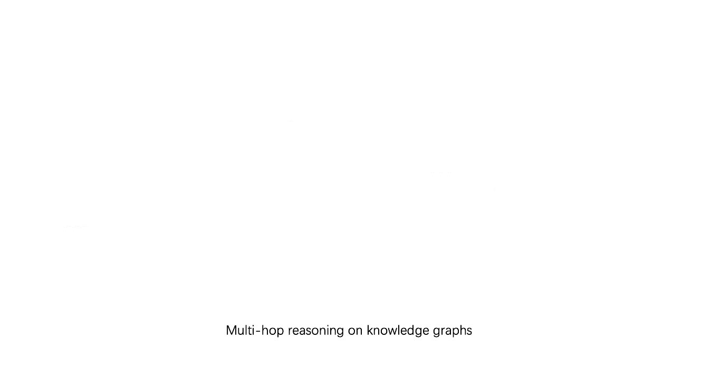

Learning from Distant, High-level Human Supervision
State-of-the-art neural models have achieved impressive results on a range of NLP tasks but are still quite data hungry to build. Training (or fine tuning) these models towards a specific task/domain may require hundreds of thousands of labeled samples. This puts huge labor burden and time cost on manual data annotation. Going beyond the standard instance-label training design, we are developing next-generation training paradigms for building neural NLP systems. The key ideas are to translate high-level human supervisions into machine-executable, modularized programs for model training, and to reference pre-existing knowledge resources for automatic data annotation. We focus on building new datasets and algorithms for digesting high-level human supervision and making use of distant supervision, in order to accelerate the model construction process and improve label efficiency of current NLP systems.
Learning from Explanations with Neural Module Execution Tree
Ziqi Wang*, Yujia Qin*, Wenxuan Zhou, Jun Yan, Qinyuan Ye, Leonardo Neves, Zhiyuan Liu, Xiang Ren. ICLR 2020.
Project
Github
Learning to Contextually Aggregate Multi-Source Supervision for Sequence Labeling
Ouyu Lan, Xiao Huang, Bill Yuchen Lin, He Jiang, Liyuan Liu, Xiang Ren. ACL 2020
Code
TriggerNER: Learning with Entity Triggers as Explanation for Named Entity Recognition.
Bill Yuchen Lin*, Dong-Ho Lee*, Ming Shen, Xiao Huang, Ryan Moreno, Prashant Shiralkar, and Xiang Ren. ACL, 2020. Github
LEAN-LIFE: A Label-Efficient Annotation Framework Towards Learning from Annotator Explanation
Dong-Ho Lee*, Rahul Khanna*, Bill Yuchen Lin, Seyeon Lee, Qinyuan Ye, Elizabeth Boschee, Leonardo Neves and Xiang Ren. ACL 2020 (demo)
Project
NERO: A Neural Rule Grounding Framework for Label-Efficient Relation Extraction
Wenxuan Zhou, Hongtao Lin, Bill Yuchen Lin, Ziqi Wang, Junyi Du, Leonardo Neves, Xiang Ren. The Web Conference 2020.
Github
AlpacaTag: An Active Learning-based Crowd Annotation Framework for Sequence Tagging
Bill Yuchen Lin*, Dong-Ho Lee*, Frank F. Xu, Ouyu Lan, Xiang Ren. ACL 2019, (System Demo).
Project |
Wiki |
Github |
Poster
Heterogeneous Supervision for Relation Extraction: A Representation Learning Approach
Liyuan Liu*, Xiang Ren*, Qi Zhu, Shi Zhi, Huan Gui, Heng Ji, Jiawei Han. EMNLP 2017.
Github
Project
Learning with Structured Inductive Biases
Deep neural networks have demonstrated strong capability in fitting large dataset in order to master a task, but at the same time also showing poor generalization ability in terms of task/domain transferability. One main reason is because the common mechanisms shared between the tasks (i.e., inductive biases), such as model components and constraints, are not explicitly specified in the model architectures. We are exploring various ways of designing structural inductive biases that are task-general and human-readable, and developing novel model architectures and learning algorithms to impose such inductive biases. This will yield NLP systems that run effectively under low data regime, while demonstrating good task/domain transferability.

Contextualizing Hate Speech Classifiers with Post-hoc Explanation
Brendan Kennedy*, Xisen Jin*, Aida Mostafazadeh Davani, Morteza Dehghani and Xiang Ren. ACL 2020.
Project
Github
KagNet: Knowledge-Aware Graph Networks for Commonsense Reasoning
Bill Yuchen Lin, Xinyue Chen, Jamin Chen, Xiang Ren. EMNLP 2019 (long).
Github
CommonGen: A Constrained Text Generation Dataset Towards Generative Commonsense Reasoning
Bill Yuchen Lin, Ming Shen, Yu Xing, Pei Zhou, Xiang Ren. arXiv preprint 2020.
Leaderboard
Github
Learning from Explanations with Neural Execution Tree
Ziqi Wang*, Yujia Qin*, Wenxuan Zhou, Jun Yan, Qinyuan Ye, Leonardo Neves, Zhiyuan Liu, Xiang Ren. ICLR 2020 (poster).
Towards Hierarchical Importance Attribution: Explaining Compositional Semantics for Neural Sequence Models
Xisen Jin, Zhongyu Wei, Junyi Du, Xiangyang Xue, Xiang Ren. ICLR 2020 (spotlight).
Project |
Github
Knowledge Reasoning over Heterogeneous Data
Rule-based symbolic reasoning systems have the advantage of precise grounding and induction but are short for the fuzzy matching and uncertainty. In contrast, embedding-based reasoning methods are built on data-driven machine learning paradigm and can fit an effective model with large amount of data, while lacking the strength of good generalization. We are working on neural-symbolic reasoning methods to combine fuzzy reasoning with good generalization, and extending the reasoning target from static, graph-structured data to heterogeneous sources such as time-variant graph structures and unstructured text.
Collaborative Policy Learning for Open Knowledge Graph Reasoning
Cong Fu, Tong Chen, Meng Qu, Woojeong Jin, Xiang Ren. EMNLP 2019.
Github
Recurrent Event Network for Reasoning over Temporal Knowledge Graphs
Woojeong Jin, Changlin Zhang, Pedro Szekely, Xiang Ren. ICLR-RLGM 2019.
Github | Survey
KagNet: Knowledge-Aware Graph Networks for Commonsense Reasoning
Bill Yuchen Lin, Xinyue Chen, Jamin Chen, Xiang Ren. EMNLP 2019 (long).
Github
Hierarchical Graph Representation Learning with Differentiable Pooling
Rex Ying, Jiaxuan You, Christopher Morris, Xiang Ren, William L. Hamilton, Jure Leskovec. NeurIPS 2018 (Spotlight).
ArXiv
Github